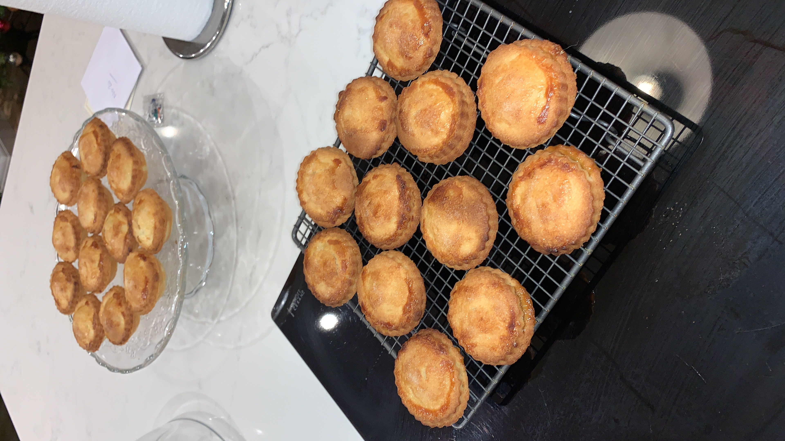

Mince pies with shortcrust pastry

Mince pies with homemade shortcrust pastry
These delicious mince pies are super easy and really tasty. Use some good quality shop bought mince meat to save time, and make your own short crust pastry to ensure a fresh and full flavour to these Christmas treats. The pastry and mince pies can be prepared the night before if more convenient, or it can be made for use on the day.
I find these mince pies are best eaten warm, straight from the oven. If I try and keep them they always go straight away! For an extra special treat, why not try these with a family favourite of mince pie with cream, mustard and stilton. It sounds like an unlikely combination, but take a warm mince pie, lift off the top and place a small pea sized amount of English Mustard and teaspoon of Stilton Cheese on the top of the mince meat. Replace the pastry top and cover with a couple of tablespoons of single cream and enjoy.
Makes approximately 20 mince pies depending on size.
Ingredients
- 1 large jar mincemeat (about 600g)
- 375g plain flour
- 260g unsalted butter, softened
- 125g caster sugar, plus extra for sprinkling
- 1 large egg, plus 1 beaten egg for glazing
- A little icing sugar, for dusting
Cooking Steps
- Place 375g plain flour and 260g softened unsalted butter in a bowl and rub together to a crumb consistency.
- Add 125g caster sugar and 1 large beaten egg, and mix together.
- Tip out onto a lightly floured surface and fold until the pastry comes together, be careful not to over mix.
- Wrap the pastry in cling film and chill for 10 mins.
- Heat oven to 220C/200C fan/gas 7.
- Roll out the pastry to 3mm thick.
- Using a round cutter (about 10cm), cut out 16 bases and place them into muffin trays. Put 1½ tbsp mincemeat mixture into each. Brush the edge of each pie with a little beaten egg.
- Re-roll out the pastry to cut 7cm lids and press them on top to seal. Glaze with the beaten egg, sprinkle with the extra caster sugar, then make a small cut in the tops.
- Bake the mince pies for 15-20 mins until golden brown. Leave to cool before releasing them from the muffin trays and dusting with a little more icing sugar before serving.